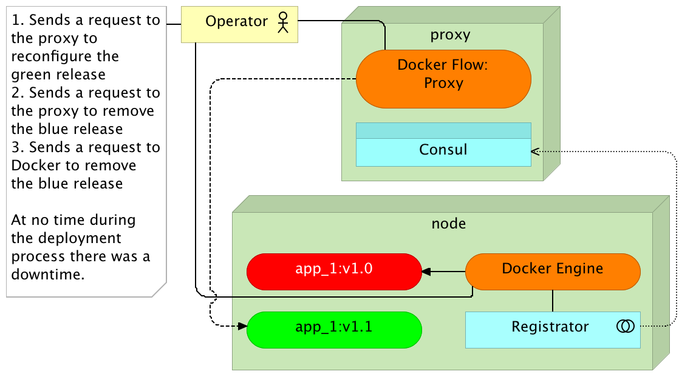
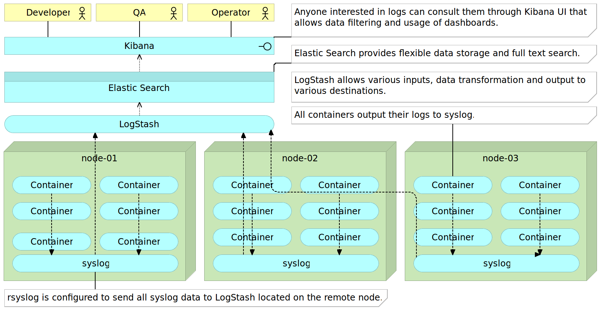

Microservices Lifecycle Workshop
Viktor Farcic
@vfarcic
TechnologyConversations.com
CloudBees.com
Viktor Farcic


Continuous deployment
- Continuous integration
- Continuous delivery
- Continuous deployment
Continuous deployment
CI process

Continuous deployment
CI pipeline

Continuous deployment
Continuous delivery process


Continuous deployment
Continuous deployment pipeline
Containers (Docker)
Shipping container is an object for holding or transporting something

- Isolated
- Immutable
- Reliable
- Self-sufficient
- Scalable
Containers (Docker)
VMs vs Containers

Containers (Docker)
Self-sufficient container

Containers (Docker)
Container with the separate DB

Containers (Docker)
Containers with the shared DB

Monolithic applications
- Single unit
- Time increases complexity and size
- Time decreases development, testing and deployment speed
- Layers
- Change is hard and with risks
- Scaling = multiplication of the entire application
Monolithic applications
Early

Monolithic applications
Later

Monolithic applications
Scaling

Microservices
Applications that fit into a screen
- System composed of small services
- Autonomy/independence
- Data exchange through APIs
- Bounded context
Microservices
Self-Sufficiency

Microservices
Gartner
Microservices are simpler, developers get more productive and systems can be scaled quickly and precisely, rather than in large monolithic globs. And I haven’t even mentioned the potential for polyglot coding and data persistence.- Gary Olliffe
Microservices
Object-Oriented Design
The big idea is 'messaging'. The key in making great and growable systems is much more to design how its modules communicate rather than what their internal properties and behaviors should be.- Alan Kay
Microservices
Single Responsibility Principle
Gather together those things that change for the same reason, and separate those things that change for different reasons- Robert C. Martin
Microservices
Linux = Microservices
ps aux | grep jav[a] | awk '{print $2}' | xargs kill
Microservices
- One thing or one functionality
- Any tools or languages
- Truly loosely coupled
- Teams independence
- Easier testing and CD
- Decentralization
Microservices
Disadvantages
- Increased operational and deployment complexity
- Configuration Management
- Containers (Docker)
- Work shifted from development to DevOps
- Remote process calls
Microservices
Advantages
- Scaling
- Resilience / fault isolation
- Innovation
- Size
- Decoupling
- Deployment
- No need for long term commitment
Microservices
Best Practices
- Containers (Docker)
- Reverse proxy
- Minimalist approach
- CM is a must
- Cross functional teams
- API versioning
Deployment
- Big vs small
- Mutable vs immutable
Deployment
Mutable Monster Server

Deployment
Immutable Server

Deployment
Immutable Server

Deployment
Immutable Server

Deployment
Immutable Server

Deployment
Immutable Micro Services

Deployment
Immutable Micro Services

Deployment
Immutable Micro Services

Deployment
Immutable Micro Services

Deployment Pipeline
- Checkout the code
- Run pre-deployment tests
- Compile and/or package the code
- Build the container
- Push the container to the registry
- Deploy the container to the production server
- Integrate the container
- Run post-deployment tests

Deployment Pipeline: Initial Stages
Creating the CD VM
git clone https://github.com/vfarcic/ms-lifecycle.git
cd ms-lifecycle
vagrant up cd --provision
vagrant ssh cdDeployment Pipeline: Initial Stages
Checking out the code
git clone https://github.com/vfarcic/go-demo.git
cd go-demoDeployment Pipeline: Initial Stages
Running pre-deployment tests and compiling and/or packaging the code
cat docker-compose-test.yml
docker-compose -f docker-compose-test.yml run --rm unit
docker ps -a
ll -tDeployment Pipeline: Initial Stages
Building Docker containers
cat Dockerfile
docker build -t vfarcic/go-demo .
docker imagesDeployment Pipeline: Initial Stages
Running containers
docker-compose up -d db app
docker-compose ps
PORT=<PORT> # Put the port from the ps command
docker-compose logs
docker-compose exec app ping -c 1 db
docker-compose exec db ping -c 1 appDeployment Pipeline: Initial Stages
Running containers
curl localhost:$PORT/demo/hello
curl -XPUT localhost:$PORT/demo/person?name=Viktor
curl -XPUT localhost:$PORT/demo/person?name=Sara
curl localhost:$PORT/demo/person
docker-compose down
docker ps -aDeployment Pipeline: Initial Stages
Pushing containers to the registry
# docker push vfarcic/go-demo
docker tag vfarcic/go-demo 10.100.198.200:5000/go-demo
docker push 10.100.198.200:5000/go-demo
exitDeployment Pipeline: Initial Stages
Checklist
Checkout the codeRun pre-deployment testsCompile and/or package the codeBuild the containerPush the container to the registry- Deploy the container to the production server
- Integrate the container
- Run post-deployment tests

Configuration Management


Configuration Management
Configuring the Production Environment
vagrant up prod
vagrant ssh cd
cd /vagrant/ansible
ansible-playbook prod.yml -i hosts/prodConfiguration Management
Production environment Ansible playbook
cat prod.yml
cat roles/docker/tasks/main.yml
cat roles/docker/tasks/debian.yml
cat hosts/prod
exitDeployment Pipeline: Intermediate Stages
Checkout the codeRun pre-deployment testsCompile and/or package the codeBuild the containerPush the container to the registry- Deploy the container to the production server
- Integrate the container
- Run post-deployment tests
Deployment Pipeline: Intermediate Stages
Deploying containers to the production server
vagrant ssh cd
export DOCKER_HOST=tcp://prod:2375
docker ps -a
cd go-demo
docker-compose up -d db app
docker-compose psDeployment Pipeline: Intermediate Stages
Post-deployment verification
docker inspect godemo_app_1
PORT=$(docker inspect \
--format='{{(index (index .NetworkSettings.Ports "8080/tcp") 0).HostPort}}' \
godemo_app_1)
echo $PORT
curl -XPUT prod:$PORT/demo/person?name=Viktor
curl -XPUT prod:$PORT/demo/person?name=Sara
curl prod:$PORT/demo/personDeployment Pipeline: Intermediate Stages
Stopping Production Node
exit
vagrant halt prodDeployment Pipeline: Intermediate Stages
Checklist
Checkout the codeRun pre-deployment testsCompile and/or package the codeBuild the containerPush the container to the registryDeploy the container to the production server- Integrate the container
- Run post-deployment tests

Service Discovery

Service Discovery
Single node

Service Discovery
Multiple nodes

Service Discovery
Service Discovery Elements
- Service registry
- Service registration
- Service discovery
Service Discovery
Tools


Service Discovery
Consul Ansible playbook
vagrant up serv-disc-01 serv-disc-02 serv-disc-03
vagrant ssh cd
cat /vagrant/ansible/hosts/serv-disc
cat /vagrant/ansible/consul.yml
cat /vagrant/ansible/roles/consul/tasks/main.yml
cat /vagrant/ansible/roles/consul/defaults/main.yml
cat /vagrant/ansible/host_vars/10.100.194.201Service Discovery
Setting up Consul
ansible-playbook \
/vagrant/ansible/consul.yml \
-i /vagrant/ansible/hosts/serv-disc
curl serv-disc-01:8500/v1/catalog/nodes | jq '.'Service Discovery
Consul

Service Discovery
Key/value store: PUT
curl -X PUT -d 'this is a test' \
serv-disc-01:8500/v1/kv/msg1
curl -X PUT -d 'this is another test' \
serv-disc-02:8500/v1/kv/messages/msg2
curl -X PUT -d 'this is a test with flags' \
serv-disc-03:8500/v1/kv/messages/msg3?flags=1234Service Discovery
Key/value store: GET/DELETE
curl serv-disc-03:8500/v1/kv/?recurse | jq '.'
curl serv-disc-02:8500/v1/kv/msg1 | jq '.'
curl serv-disc-01:8500/v1/kv/msg1?raw
curl -X DELETE serv-disc-01:8500/v1/kv/messages/msg2
curl serv-disc-03:8500/v1/kv/?recurse | jq '.'
curl -X DELETE serv-disc-02:8500/v1/kv/?recurse
curl serv-disc-03:8500/v1/kv/?recurse | jq '.'Service Discovery
Registrator
cat /vagrant/ansible/roles/registrator/tasks/main.yml
cat /vagrant/ansible/roles/registrator/defaults/main.yml
ansible-playbook \
/vagrant/ansible/registrator.yml \
-i /vagrant/ansible/hosts/serv-discService Discovery
Consul / Registrator

Service Discovery
Registering service
docker -H tcp://serv-disc-01:2375 run -d \
--name nginx \
--env SERVICE_NAME=nginx \
--env SERVICE_ID=nginx \
-p 1234:80 \
nginx:alpine
curl serv-disc-01:8500/v1/catalog/service/nginx-80 | jq '.'Service Discovery
Registering service again
docker -H tcp://serv-disc-02:2375 run -d \
--name nginx2 \
--env "SERVICE_ID=nginx2" \
--env "SERVICE_NAME=nginx" \
--env "SERVICE_TAGS=balancer,proxy,www" \
-p 1111:80 \
nginx:alpine
curl serv-disc-02:8500/v1/catalog/service/nginx-80 | jq '.'Service Discovery
Consul / Registrator / Consul Template

Service Discovery
Running Consul Template
curl serv-disc-01:8500/v1/catalog/service/nginx-80 | jq '.'
cat /data/consul-template/example2.ctmpl
consul-template \
-consul serv-disc-01:8500 \
-template "/data/consul-template/example2.ctmpl:/tmp/example.conf" \
-once
cat /tmp/example.confService Discovery
Cleanup
exit # Exit cd node
vagrant destroy -f serv-disc-01 serv-disc-02 serv-disc-03Proxy Service
Proxy Service
nginx Ansible Playbook
vagrant up proxy
vagrant ssh cd
cat /vagrant/ansible/nginx.yml
cat /vagrant/ansible/roles/nginx/files/services.conf
ansible-playbook /vagrant/ansible/nginx.yml \
-i /vagrant/ansible/hosts/proxy
export DOCKER_HOST=tcp://proxy:2375
docker ps
curl proxy:8500/v1/catalog/services | jq '.'Proxy Service
Services Without Proxy
cd go-demo
docker-compose up -d db app
curl proxy/api/v1/books
docker-compose ps
PORT=$(docker inspect \
--format='{{(index (index .NetworkSettings.Ports "8080/tcp") 0).HostPort}}' \
godemo_app_1)
curl proxy:$PORT/demo/hello
exitProxy Service
Services Without Proxy

Proxy Service
Manually Setting Proxy
vagrant ssh proxy
PORT=$(docker inspect \
--format='{{(index (index .NetworkSettings.Ports "8080/tcp") 0).HostPort}}' \
godemo_app_1)
echo "location /demo {
proxy_pass http://10.100.193.200:$PORT/demo;
}" | sudo tee /data/nginx/includes/go-demo.conf
docker kill -s HUP nginx
curl http://localhost/demo/hello
docker rm -f nginx
exitProxy Service
Manually Setting Proxy

Proxy Service
Docker Flow: Proxy
vagrant ssh cd
export DOCKER_HOST=tcp://proxy:2375
docker run -d \
--name docker-flow-proxy \
-e CONSUL_ADDRESS=10.100.193.200:8500 \
-p 80:80 -p 8081:8080 \
vfarcic/docker-flow-proxy
curl "proxy:8081/v1/docker-flow-proxy/reconfigure?serviceName=go-demo&servicePath=/demo" \
| jq '.'
curl -i proxy/demo/helloProxy Service
Docker Flow: Proxy
cd go-demo
docker-compose ps
docker-compose scale app=3
docker-compose ps
curl "proxy:8081/v1/docker-flow-proxy/reconfigure?serviceName=go-demo&servicePath=/demo" \
| jq '.'
curl -i proxy/demo/hello # Repeat a few times
docker-compose logs appDeployment
Docker Flow: Proxy

Proxy Service
Cleanup
exit
vagrant halt proxyDeployment Pipeline: The Late Stages
Checkout the codeRun pre-deployment testsCompile and/or package the codeBuild the containerPush the container to the registryDeploy the container to the production server- Integrate the container
- Run post-deployment tests
Deployment Pipeline: The Late Stages
Provision Production
vagrant up prod
vagrant ssh cd
cd /vagrant/ansible
ansible-playbook prod2.yml -i hosts/prod --skip-tags "nginx"Deployment Pipeline: The Late Stages
Run Containers
export DOCKER_HOST=tcp://prod:2375
cd ~/go-demo
docker-compose up -d db app
curl prod:8500/v1/catalog/service/go-demo \
| jq '.'Deployment Pipeline: The Late Stages
Reconfigure the Proxy
curl -i prod/demo/hello
docker run -d \
--name docker-flow-proxy \
-e CONSUL_ADDRESS=10.100.198.201:8500 \
-p 80:80 -p 8081:8080 \
vfarcic/docker-flow-proxy
curl "prod:8081/v1/docker-flow-proxy/reconfigure?serviceName=go-demo&servicePath=/demo" \
| jq '.'
curl -i prod/demo/helloDeployment Pipeline: The Late Stages
Run Integration Tests
cat docker-compose-test.yml
unset DOCKER_HOST
export HOST_IP=10.100.198.201
docker-compose \
-f docker-compose-test.yml \
run --rm production
# docker push vfarcic/go-demoDeployment Pipeline: The Late Stages
Clean Up
export DOCKER_HOST=tcp://prod:2375
docker-compose down
curl "prod:8081/v1/docker-flow-proxy/remove?serviceName=go-demo" \
| jq '.'Deployment Pipeline: The Late Stages
Checklist
Checkout the codeRun pre-deployment testsCompile and/or package the codeBuild the containerPush the container to the registryDeploy the container to the production serverIntegrate the containerRun post-deployment tests
Deployment Pipeline: The Late Stages
Problems
- Downtime
- Not scalable
- Not failure tolerant
- Difficult to monitor
- Not automated
Standard Deployment
Standard Deployment

Standard Deployment

Blue-Green Deployment
Blue-Green Deployment

Blue-Green Deployment

Blue-Green Deployment

Blue-Green Deployment

Blue-Green Deployment
cat docker-compose-bg.yml
export NEXT_COLOR=blue
VERSION=:1.0 docker-compose -f docker-compose-bg.yml \
up -d db app-${NEXT_COLOR}
curl "prod:8081/v1/docker-flow-proxy/reconfigure?serviceName=go-demo-${NEXT_COLOR}&servicePath=/demo" \
| jq '.'
curl -i prod/demo/hello
docker-compose -f docker-compose-bg.yml logs
curl -XPUT -d $NEXT_COLOR prod:8500/v1/kv/go-demo/colorBlue-Green Deployment

Blue-Green Deployment
COLOR=$(curl prod:8500/v1/kv/go-demo/color?raw)
NEXT_COLOR=$(if [[ "$COLOR" == "blue" ]]; then echo "green"
else echo "blue"; fi)
VERSION=:1.1 docker-compose -f docker-compose-bg.yml \
up -d db app-${NEXT_COLOR}
docker-compose -f docker-compose-bg.yml ps
curl -i prod/demo/hello
docker-compose -f docker-compose-bg.yml logsBlue-Green Deployment

Blue-Green Deployment
curl "prod:8081/v1/docker-flow-proxy/reconfigure?serviceName=go-demo-${NEXT_COLOR}&servicePath=/demo" \
| jq '.'
curl "prod:8081/v1/docker-flow-proxy/remove?serviceName=go-demo-${COLOR}" \
| jq '.'
curl -XPUT -d $NEXT_COLOR prod:8500/v1/kv/go-demo/color
curl -i prod/demo/hello # Repeat
docker-compose -f docker-compose-bg.yml logs
docker-compose -f docker-compose-bg.yml stop app-${COLOR}
docker-compose -f docker-compose-bg.yml psBlue-Green Deployment
Blue-Green Deployment
docker-compose -f docker-compose-bg.yml down
curl "prod:8081/v1/docker-flow-proxy/remove?serviceName=go-demo-${NEXT_COLOR}" \
| jq '.'Docker Flow
export FLOW_PROXY_HOST=10.100.198.201
export FLOW_PROXY_RECONF_PORT=8081
export FLOW_CONSUL_ADDRESS=http://10.100.198.201:8500
export FLOW_PROXY_DOCKER_HOST=tcp://10.100.198.201:2375
docker-flow --flow=deploy --flow=proxy --flow=stop-old
docker ps -a --format "table {{.Names}}\t{{.Status}}\t{{.Ports}}"
curl -i prod/demo/helloDocker Flow
docker-flow --flow=deploy --flow=proxy --flow=stop-old
docker ps -a --format "table {{.Names}}\t{{.Status}}\t{{.Ports}}"
curl -i prod/demo/helloClean Up
exit
vagrant destroy -f prodClustering And Scaling Services


Clustering And Scaling Services
Tools
- Kubernetes
- Mesos DCOS
Clustering And Scaling Services
Service Discovery

Clustering And Scaling Services
Master and Nodes

Clustering And Scaling Services
Deploying the First Container

Clustering And Scaling Services
The Second Container

Clustering And Scaling Services
All Nodes Full

Clustering And Scaling Services
Adding a New Node

Clustering And Scaling Services
Failed Node

Clustering And Scaling Services
Setting Up Docker Swarm
vagrant up swarm-master swarm-node-1 swarm-node-2
vagrant ssh cd
cat /vagrant/ansible/swarm.yml
cat /vagrant/ansible/roles/swarm/tasks/main.yml
ansible-playbook /vagrant/ansible/swarm.yml \
-i /vagrant/ansible/hosts/prod
export DOCKER_HOST=tcp://10.100.192.200:2375
docker info
docker ps -a
Clustering And Scaling Services
Deploying with Docker Swarm
cd ~/books-ms
docker-compose up -d app
docker-compose ps
docker ps -a | grep books
curl 10.100.192.200:8500/v1/catalog/services \
| jq '.'
curl 10.100.192.200:8500/v1/catalog/service/books-ms \
| jq '.'
Clustering and Scaling Services
Testing Deployments with Docker Swarm
BOOKS_MS_ADDRESS=`curl \
10.100.192.200:8500/v1/catalog/service/books-ms \
| jq '.[0].Address'`
BOOKS_MS_PORT=`curl \
10.100.192.200:8500/v1/catalog/service/books-ms \
| jq '.[0].ServicePort'`
BOOKS_MS_HOST=${BOOKS_MS_ADDRESS//\"}:${BOOKS_MS_PORT}
echo $BOOKS_MS_HOST
curl -H 'Content-Type: application/json' -X PUT -d \
'{"_id": 1,
"title": "My First Book",
"author": "John Doe",
"description": "Not a very good book"}' \
$BOOKS_MS_HOST/api/v1/books | jq '.'
curl $BOOKS_MS_HOST/api/v1/books | jq '.'
docker-compose stop app db
docker-compose rm -f app db
docker ps -a
Clustering and Scaling Services
Deploying with Docker Swarm to the Cluster
cat docker-compose-swarm.yml
docker-compose --x-networking \
-f docker-compose-swarm.yml \
up -d db app
curl 10.100.192.200:8500/v1/catalog/services \
| jq '.'
docker ps --filter name=books --format "table {{.Names}}"
docker exec -t booksms_app_1 cat /etc/hosts
Clustering And Scaling Services
Testing Deployment with Docker Swarm to the Cluster
BOOKS_MS_ADDRESS=`curl \
10.100.192.200:8500/v1/catalog/service/books-ms \
| jq '.[0].Address'`
BOOKS_MS_PORT=`curl \
10.100.192.200:8500/v1/catalog/service/books-ms \
| jq '.[0].ServicePort'`
BOOKS_MS_HOST=${BOOKS_MS_ADDRESS//\"}:${BOOKS_MS_PORT}
echo $BOOKS_MS_HOST
curl -H 'Content-Type: application/json' -X PUT -d \
'{"_id": 2,
"title": "My Second Book",
"author": "John Doe",
"description": "A bit better book"}' \
$BOOKS_MS_HOST/api/v1/books | jq '.'
curl $BOOKS_MS_HOST/api/v1/books | jq '.'
Clustering And Scaling Services
Scaling Services with Docker Swarm
docker-compose --x-networking \
-f docker-compose-swarm.yml \
scale app=3
docker ps --filter name=books --format "table {{.Names}}"
BOOKS_MS_ADDRESS=`curl \
10.100.192.200:8500/v1/catalog/service/books-ms \
| jq '.[0].Address'`
BOOKS_MS_PORT=`curl \
10.100.192.200:8500/v1/catalog/service/books-ms \
| jq '.[0].ServicePort'`
BOOKS_MS_HOST=${BOOKS_MS_ADDRESS//\"}:${BOOKS_MS_PORT}
echo $BOOKS_MS_HOST
curl $BOOKS_MS_HOST/api/v1/books | jq '.'
BOOKS_MS_ADDRESS=`curl \
10.100.192.200:8500/v1/catalog/service/books-ms \
| jq '.[1].Address'`
BOOKS_MS_PORT=`curl \
10.100.192.200:8500/v1/catalog/service/books-ms \
| jq '.[1].ServicePort'`
BOOKS_MS_HOST=${BOOKS_MS_ADDRESS//\"}:${BOOKS_MS_PORT}
echo $BOOKS_MS_HOST
curl $BOOKS_MS_HOST/api/v1/books | jq '.'
Clustering And Scaling Services
Descaling Services with Docker Swarm
docker-compose --x-networking \
-f docker-compose-swarm.yml \
scale app=1
docker ps --filter name=books --format "table {{.Names}}"
BOOKS_MS_ADDRESS=`curl \
10.100.192.200:8500/v1/catalog/service/books-ms \
| jq '.[0].Address'`
BOOKS_MS_PORT=`curl \
10.100.192.200:8500/v1/catalog/service/books-ms \
| jq '.[0].ServicePort'`
BOOKS_MS_HOST=${BOOKS_MS_ADDRESS//\"}:${BOOKS_MS_PORT}
echo $BOOKS_MS_HOST
curl $BOOKS_MS_HOST/api/v1/books | jq '.'
Clustering And Scaling Services
Cleaning Up
docker-compose -f docker-compose-swarm.yml stop app db
docker-compose -f docker-compose-swarm.yml rm -f app db
docker ps -a
Clustering And Scaling Services
Examining the Swarm Deployment Playbook
cat /vagrant/ansible/service-swarm.yml
cat /vagrant/ansible/roles/service-swarm/tasks/main.yml
cat /vagrant/ansible/roles/service-swarm/tasks/pre-deployment.yml
cat /vagrant/ansible/roles/service-swarm/tasks/deployment.yml
cat /vagrant/ansible/roles/service-swarm/tasks/nginx.yml
cat /vagrant/ansible/roles/service-swarm/tasks/post-deployment.yml
cat /vagrant/ansible/roles/service-swarm/tasks/rollback.yml
cat /vagrant/ansible/roles/service-swarm/tasks/main.yml
cat /vagrant/ansible/roles/service-swarm/tasks/copy.yml
cat /vagrant/ansible/roles/service-swarm/defaults/main.yml
cat /vagrant/ansible/roles/service-swarm/files/get-color.sh
cat /vagrant/ansible/roles/service-swarm/files/get-domain.sh
Clustering And Scaling Services
Running the Swarm Deployment Playbook
ansible-playbook /vagrant/ansible/service-swarm.yml \
-i /vagrant/ansible/hosts/prod \
--extra-vars "repo_dir=$PWD service_name=books-ms" \
-vv --skip-tags "build,pull,push"
curl 10.100.192.200:8500/v1/catalog/services \
| jq '.'
curl 10.100.192.200:8500/v1/catalog/service/books-db \
| jq '.'
curl 10.100.192.200:8500/v1/catalog/service/books-ms-blue \
| jq '.'
curl 10.100.192.200:8500/v1/kv/books-ms/color?raw
curl 10.100.192.200/api/v1/books | jq '.'
Clustering And Scaling Services
Scaling the Service With Ansible
ansible-playbook /vagrant/ansible/service-swarm.yml \
-i /vagrant/ansible/hosts/prod \
--extra-vars "repo_dir=$PWD service_name=books-ms" \
--skip-tags "build,pull,push" --extra-vars "scale_service=3"
curl 10.100.192.200:8500/v1/catalog/services \
| jq '.'
curl 10.100.192.200:8500/v1/catalog/service/books-ms-green \
| jq '.'
curl http://10.100.192.200:8500/v1/kv/books-ms/color?raw
curl 10.100.192.200/api/v1/books | jq '.'
CI Tools
- GoCD
- Bamboo
- Travis
- CircleCI
- Shippable
CI Tools
Jenkins Setup
ansible-playbook /vagrant/ansible/jenkins.yml \
-c local
cat /vagrant/ansible/jenkins.yml
cat /vagrant/ansible/roles/java/tasks/main.yml
cat /vagrant/ansible/roles/jenkins/tasks/main.yml
cat /vagrant/ansible/roles/jenkins/defaults/main.yml
cat /vagrant/ansible/roles/jenkins/templates/service-config.xml
Self-Healing Systems
- Application level
- System level
- Hardware level
Self-Healing Systems
System Level: Time-To-Live (TTL)

Self-Healing Systems
System Level: Pings

Self-Healing Systems
Check Types
- Preventive
- Reactive
Self-Healing Systems
Consul Health Checks

Self-Healing Systems
Ansible Playbook
cat /vagrant/ansible/swarm-healing.yml
cat /vagrant/ansible/roles/consul-healing/tasks/main.yml
cat /vagrant/ansible/roles/consul-healing/defaults/main.yml
cat /vagrant/ansible/roles/consul-healing/files/consul_check.json
cat /vagrant/ansible/roles/consul-healing/files/mem.sh
cat /vagrant/ansible/roles/consul-healing/files/disk.sh
cat /vagrant/ansible/roles/consul-healing/templates/watches.json
cat /vagrant/ansible/roles/consul-healing/templates/manage_watches.sh
Self-Healing Systems
Ansible Playbook
ansible-playbook /vagrant/ansible/swarm-healing.yml \
-i /vagrant/ansible/hosts/prod
Open http://10.100.198.200:8080/job/hardware-notification/
Self-Healing Systems
Healing Automation
cat /vagrant/ansible/roles/service-swarm/tasks/post-deployment.yml
cat /vagrant/ansible/roles/service-swarm/templates/consul_service.json
cat /vagrant/ansible/roles/service-redeploy/tasks/main.yml
ansible-playbook /vagrant/ansible/jenkins.yml \
--extra-vars "service_job_template=service-config-healing.xml" \
-c local
Self-Healing Systems
Jenkins
Open http://10.100.198.200:8080/job/books-ms/configureOpen http://10.100.198.200:8080/job/books-ms/build
Open http://10.100.198.200:8080/job/books-ms/lastBuild/console
Open http://10.100.198.200:8080/job/books-ms-redeploy/configure
Self-Healing Systems
Healing Services
export DOCKER_HOST=tcp://10.100.192.200:2375
docker ps --filter name=books --format "table {{.Names}}"
docker stop $(docker ps | grep booksms_app | awk '{ print $1}')
docker ps --filter name=books --format "table {{.Names}}"
curl 10.100.192.200/api/v1/books | jq '.'
docker ps --filter name=books --format "table {{.Names}}"
Open http://10.100.198.200:8080/job/books-ms-redeploy/lastBuild/console
Self-Healing Systems
Healing Node Failure
exit
vagrant halt swarm-node-2
Open http://10.100.192.200:8500/ui/#/dc1/services/books-ms
Open http://10.100.198.200:8080/job/books-ms-redeploy/lastBuild/console
Self-Healing Systems
Check the Node
vagrant ssh cd
export DOCKER_HOST=tcp://10.100.192.200:2375
docker info
docker ps --filter name=books --format "table {{.Names}}"
curl 10.100.192.200/api/v1/books | jq '.'
exit
Self-Healing Systems
Bring Up the Node
vagrant up swarm-node-2
vagrant ssh cd
ansible-playbook /vagrant/ansible/swarm-healing.yml \
-i /vagrant/ansible/hosts/swarm \
-vv
export DOCKER_HOST=tcp://10.100.192.200:2375
docker info
docker stop $(docker ps | grep booksms_app | awk '{ print $1}')
docker ps -a | grep books
curl 10.100.192.200:8500/v1/catalog/services \
| jq '.'
curl 10.100.192.200/api/v1/books | jq '.'
Centralized Logging
Centralized Logging
Ansible Playbook
cat /vagrant/ansible/logging.yml
cat /vagrant/ansible/roles/elasticsearch/tasks/main.yml
cat /vagrant/ansible/roles/logstash/tasks/main.yml
cat /vagrant/ansible/roles/logstash/files/syslog.conf
cat /vagrant/ansible/roles/kibana/tasks/main.yml
cat /vagrant/ansible/roles/rsyslog/tasks/main.yml
cat /vagrant/ansible/roles/rsyslog/templates/10-logstash.conf
Centralized Logging
Running Ansible Playbook
ansible-playbook /vagrant/ansible/logging.yml \
-i /vagrant/ansible/hosts/prod
Say Again
- over mutable deployments
- over big
- over manual procedures
- over predefined configuration
- over static
- over do-it-all tools